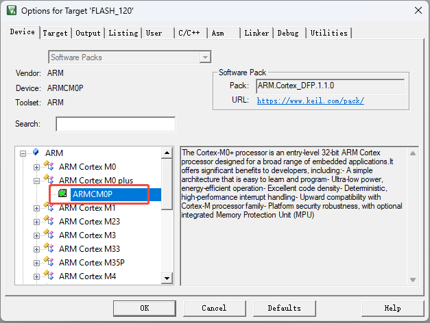
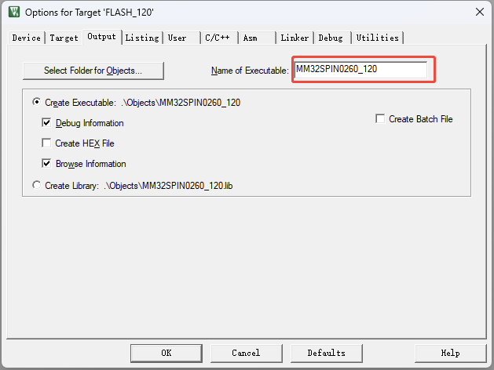
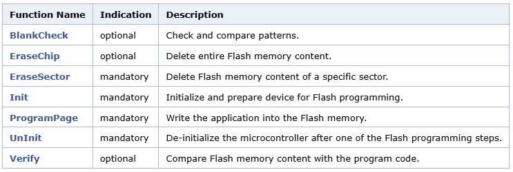
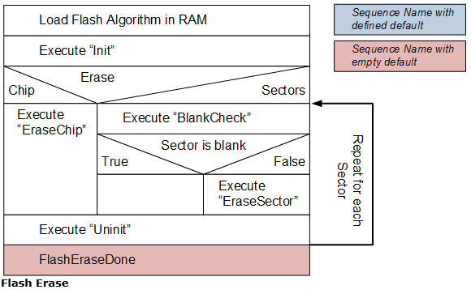
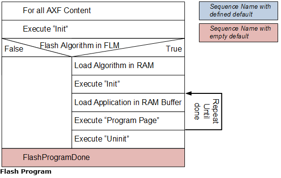
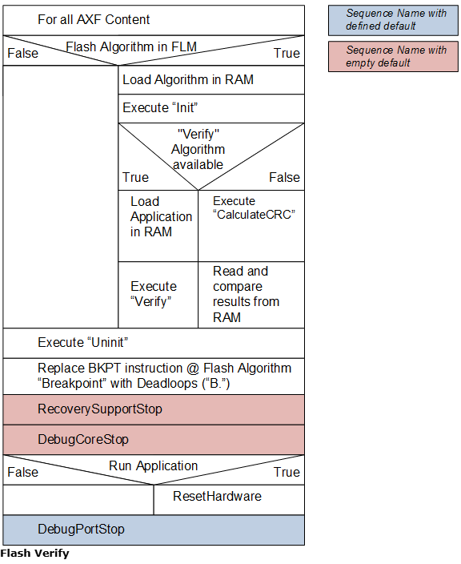

制作keil编程算法文件¶
Flash 编程算法是一种用于擦除或下载应用程序到 Flash 设备的软件。设备系列包 （DFP） 通常包含预定义的 Flash 算法，用于对其中支持的设备进行编程。ARM：CMSIS 包中提供了用于创建新算法的模板。以下部分更详细地介绍了该过程。
创建新算法¶
Flash 编程算法定义了擦除和编程 Flash 器件的功能。需要特殊的编译器和链接器设置。按照以下步骤创建和配置新的 Flash 编程算法：
- 将 ARM：CMSIS Pack 文件夹（通常为 C:\Keil_v5\ARM\Flash_Template）中的内容复制到新文件夹。
. |-- FlashDev.c |-- FlashOS.h |-- FlashPrg.c |-- NewDevice.uvguix |-- NewDevice.uvoptx |-- NewDevice.uvprojx `-- Target.lin - 重命名项目文件 NewDevice.uvprojx 以表示新的 Flash ROM 设备名称，例如 MyDevice.uvprojx。
- 使用 uVision 打开项目。在工具栏中，使用下拉列表 Select Target 定义处理器架构。Cortex-M 适用于所有 Cortex-M0/M0+、M3 和 M4 设备。该配置假定一个 little-endian 微控制器。如果是 big-endian 微控制器，请使用 Project - Options for Target - Device 选择正确的处理器内核。
MM32SPIN0260 使用的是 M0+ 内核，选择 ARMCM0P。  - 打开 Project - Options for Target - Output 对话框，并更改Name of Executable 字段的内容以表示设备，例如 MyDevice。
MM32SPIN0260 有 120k main 空间，以及 8k 保密空间，和 1k 用户空间。
 - 适配 FlashPrg 文件中的编程算法。
- 适配 FlashDev 文件中的设备参数。
- 使用 Project - Build Target 生成新的 Flash 编程算法。必须将输出文件（例如 MyDevice.FLM）添加到 DFP 中。
Note
- 不支持使用 MDK-Lite 创建 Flash 编程算法。
- Flash 编程算法使用 Read-Only Position Independent 和 Read-Write Position Independent 程序代码。这些选项在对话框 Project - Options for Target - C/C++ 和 Project - Options for Target - Asm 中进行设置。
- Project - Options for Target - Linker 定义链接器分散文件 Target.lin。错误 L6305 使用 --diag_suppress L6305 禁用。
- “算法函数”章节包含所有可用函数的参考。
FlashPrg.c¶
文件 FlashPrg.c 包含必需的 Flash 编程函数 Init、UnInit、EraseSector 和 ProgramPage。（可选）根据设备功能（或加快执行速度），可以实现 EraseChip、BlankCheck 和 Verify 函数。
FlashDev.c¶
文件 FlashDev.c 包含以下参数定义：
- Flash 编程函数。
- FlashDevice 结构：
struct FlashDevice const FlashDevice = { FLASH_DRV_VERS, // Driver Version, do not modify! "New Device 256kB Flash", // Device Name ONCHIP, // Device Type 0x00000000, // Device Start Address 0x00040000, // Device Size in Bytes (256kB) 1024, // Programming Page Size 0, // Reserved, must be 0 0xFF, // Initial Content of Erased Memory 100, // Program Page Timeout 100 mSec 3000, // Erase Sector Timeout 3000 mSec // Specify Size and Address of Sectors 0x002000, 0x000000, // Sector Size 8kB (8 Sectors) 0x010000, 0x010000, // Sector Size 64kB (2 Sectors) 0x002000, 0x030000, // Sector Size 8kB (8 Sectors) SECTOR_END };
Note
- Device Name 通常显示在用于标识 Flash 算法的工具中。确保此名称反映设备名称。
- Programming Page Size 指定使用函数 ProgramPage 函数进行编程的块大小。对于数据块大小较小的设备，最好指定物理数据块大小的倍数，因为这可以减少与目标的通信开销。快速编程的最佳块大小为 1024 字节，但系统本身不限制此大小值。
Tip
结构体变量 FlashDevice 的最后一个成员是一个 结构体数组 sectors， 数组大小由 SECTOR_NUM 定义，最大 512 。数组中的每一项定义 扇区的大小和起始地址。注意该地址是相对于 Device Start Address 来说的。示例中，大小为 0x002000(8kB) 的 sector 从 0x000000 到 0x010000 共 8 个；大小为 0x10000(64kB) 的 sector 从 0x010000 到 0x030000 共 2 个；大小为 0x002000(8kB) 的 sector 从 0x030000 到 0x040000 共 8 个。SECTOR_END 是一个特殊标记，告诉程序解析结构体变量 FlashDevice 到此为此。
向Pack中添加算法文件¶
生成的 *.FLM 文件需要添加到 DFP 中，以便工具用户可以使用它来对其设备进行编程。通常，会创建一个目录 Flash，并将算法保存在该目录中。
算法在 /package/devices/family 级别中指定：
<family Dfamily="STM32F4" Dvendor="STMicroelectronics:13">
...
<algorithm name="Flash/STM32F2xx_512.flm" start=0x08000000 size=0x10000 default="1"/> <!-- valid for all devices of the family -->
<subFamily DsubFamily="STM32F405">
<algorithm name="Flash/STM32F2xx_1024.flm" start=0x08000000 size=0x20000 default="1"/> <!-- valid for all devices of a subFamily -->
<device Dname="STM32F405OE">
<algorithm name="Flash/STM32F2xx_2048.flm" start=0x08000000 size=0x40000 default="1"/> <!-- finally, this is the default for the device -->
</device>
...
</family>
参数 size 指定 Flash 编程算法所覆盖的大小。结束地址 = start + size - 1。
参数 default 指定是否将 Flash 编程算法设置为项目中的默认算法（如果为 true）。如果未设置 default 或 false，则可以在较低级别配置 Flash 编程算法。但是，在开发过程中，可以随时手动更改项目的 Flash 编程算法。
算法函数¶
空白检查。
以下函数可用于创建新的 Flash 编程算法：

下图显示了开发工具如何执行 Flash Programming Algorithms 的函数。
执行 Flash Erase 序列以擦除 Flash 内容。

执行 Flash Program 序列以对 Flash 存储器进行编程。

执行 Flash Verify 序列以验证 Flash 编程后的内容。

Blank Check¶
int BlankCheck (unsigned long adr, unsigned long sz, unsigned char pat);
- adr 区块起始地址
- sz 块大小（以字节为单位）
- pat 要比较的 pat 模式
返回 状态信息：
- 0 当块内容等于模式 pat.
- 1 当块内容与模式 pat 不同.
函数 BlankCheck 可用于检查指定的块是否为空，或者内容是否等于参数 pat 中定义的特定模式。 参数 adr 指定要验证的块的起始地址。 参数 sz 指定要验证的块的大小。
代码示例
int BlankCheck (unsigned long adr, unsigned long sz, unsigned char pat) {
unsigned long i, j, k;
// Recalculate address for External SDRAM addresses
if (adr >= SDRAM_START)
adr = adr - SDRAM_START + USER_OFFSET;
for (i = 0; i < sz; i += 256) {
// Read 256 bytes
ReadPage_HW (adr+i, 256, &rd_buf[0]);
// Determine size to compare
if ((sz-i) >= 256) k = 256;
else k = (sz-i);
// Check up to 256 bytes if equal to pattern "pat"
for (j = 0; j < k; j++)
if (rd_buf[j] != pat) return (1); // Memory is not blank
}
return (0); // Memory is blank
}
EraseChip¶
int EraseChip (void);
- 成功时为 0。
- 失败时为 1。
EraseChip 功能删除整个 Flash 内存的内容。每当使用 uVision 菜单 Flash - Erase 时，或者尝试将程序下载到 Flash 中，并且在 Flash 下载设置对话框中设置了 Erase Full Chip 选项时，都会调用它。如果 Flash Programming Algorithm 中缺少此函数，则执行 EraseSector 函数，直到 Flash 区域的全部内容被删除。
代码示例
int EraseChip (void) {
FLASH->CR |= FLASH_MER; // Mass Erase Enabled
FLASH->CR |= FLASH_STRT; // Start Erase
while (FLASH->SR & FLASH_BSY) {
IWDG->KR = 0xAAAA; // Reload IWDG
}
FLASH->CR &= ~FLASH_MER; // Mass Erase Disabled
return (0); // Done
}
EraseSector¶
int EraseSector (unsigned long adr);
- adr 扇区地址
返回 状态信息：
- 成功时为 0。
- 失败时为 1。
函数 EraseSector 删除从参数 adr 指定的地址开始的扇区内容。每当使用 uVision 菜单 Flash - Erase 时，或者尝试将程序下载到 Flash 中，并且在 Flash 下载设置对话框中设置了 Erase Sectors 选项时，都会调用该函数。
int EraseSector (unsigned long adr) {
FLASH->CR |= FLASH_PER; // Page Erase Enabled
FLASH->AR = adr; // Page Address
FLASH->CR |= FLASH_STRT; // Start Erase
while (FLASH->SR & FLASH_BSY) {
IWDG->KR = 0xAAAA; // Reload IWDG
}
FLASH->CR &= ~FLASH_PER; // Page Erase Disabled
return (0); // Done
}
Init¶
int Init (unsigned long adr, unsigned long clk, unsigned long fnc);
- adr 设备基址
- clk 时钟频率 （Hz）
- fnc 函数代码
返回 状态信息：
- 成功时为 0。
- 失败时为 1。
函数 Init 初始化微控制器以进行 Flash 编程。每当尝试将程序下载到 Flash 时，都会调用它。
参数 adr 指定设备的基址。
参数 clk 指定用于对 device 进行编程的 clock frequency 。
参数 fnc 是一个数字：
- 代表 Erase。
- 代表编程。
- 代表验证。
因此，可以为每个单独的 Flash 编程步骤实现不同的初始化部分。
代码示例
int Init (unsigned long adr, unsigned long clk, unsigned long fnc) {
// Zero Wait State
FLASH->ACR = 0x00000000;
// Unlock Flash
FLASH->KEYR = FLASH_KEY1;
FLASH->KEYR = FLASH_KEY2;
// Test if IWDG is running (IWDG in HW mode)
if ((FLASH->OBR & 0x04) == 0x00) {
// Set IWDG time out to ~32.768 second
IWDG->KR = 0x5555; // Enable write access to IWDG_PR and IWDG_RLR
IWDG->PR = 0x06; // Set prescaler to 256
IWDG->RLR = 4095; // Set reload value to 4095
}
return (0);
}
ProgramPage¶
int ProgramPage (unsigned long adr, unsigned long sz, unsigned char *buf);
- adr 页面起始地址
- sz 页面大小
- buf 待写入数据
返回 状态信息：
- 成功时为 0。
- 失败时为 1。
函数 ProgramPage 用于将代码写入 Flash 存储器。调用它以将程序下载到 Flash。由于 Flash 存储器通常以块或页的形式组织，因此函数 ProgramPage 的参数不得跨越这些 Flash 页的对齐边界。页面大小在 FlashDevice 结构体中指定，值为 Program Page Size。
参数 adr 指定要编程的页面的起始地址。它由主机编程系统与 Flash 页的起始地址对齐。
参数 sz 指定数据缓冲区中的数据大小。主机编程系统确保不跨越页面边界。
参数 buf 指向包含要编程的数据的数据缓冲区。
Note
主机编程系统确保参数 adr + sz 永远不会跨越任何页面边界。因此，函数 ProgramPage 不需要对此进行任何规定。
代码示例
int ProgramPage (unsigned long adr, unsigned long sz, unsigned char *buf) {
sz = (sz + 1) & ~1; // Adjust size for Half Words
while (sz) {
FLASH->CR |= FLASH_PG; // Programming Enabled
M16(adr) = *((unsigned short *)buf); // Program Half Word
while (FLASH->SR & FLASH_BSY);
FLASH->CR &= ~FLASH_PG; // Programming Disabled
// Check for Errors
if (FLASH->SR & (FLASH_PGERR | FLASH_WRPRTERR)) {
FLASH->SR |= FLASH_PGERR | FLASH_WRPRTERR;
return (1); // Failed
}
// Go to next Half Word
adr += 2;
buf += 2;
sz -= 2;
}
return (0); // Done
}
UnInit¶
int UnInit (unsigned long fnc);
- fnc 函数代码
返回 状态信息：
- 成功时为 0。
- 失败时为 1。
函数 UnInit 对微控制器进行反初始化，并在擦除、编程或验证步骤结束时调用。
参数 fnc 是一个数字：
- 1 代表 Erase。
- 2 代表编程。
- 3 代表验证。
因此，可以为每个单独的 Flash 编程步骤实现不同的 de-initialization 部分。
代码示例
int UnInit (unsigned long fnc) {
// Lock Flash
FLASH->CR |= FLASH_LOCK;
return (0);
}
Verify¶
unsigned long Verify (unsigned long adr, unsigned long sz, unsigned char *buf);
- adr 起始地址
- sz 大小（字节）
- buf 要比较的数据
返回 状态信息：
- （ADR+SZ）的总和代表成功。
- 任何其他数字代表失败，是失败的地址。
函数 Verify 将 Flash 内存的内容与程序代码 *buf 进行比较。
参数 adr 指定验证的起始地址。
参数 sz 指定验证的大小。
参数 buf 指向包含要验证的数据的缓冲区。
代码示例
unsigned long Verify (unsigned long adr, unsigned long sz, unsigned char *buf) {
unsigned long i, adr_dest, in_page_ofs;
if (adr < block_size) { // Verifying 2-nd level bootloader data
adr_dest = adr + page_usr_size; // skip page 0 of block 0
} else { // Verifying program data
FindBlock(adr, 0);
adr_dest = nand_block_offset + (adr & (block_size-1));
}
in_page_ofs = adr_dest & (page_usr_size-1);
if (ReadPage_HW(adr_dest, page_usr_size, data_buf)) return (1);
for (i=0; i<sz; i++)
if (buf[i] != data_buf[i+in_page_ofs])
break;
return (adr+i);
}